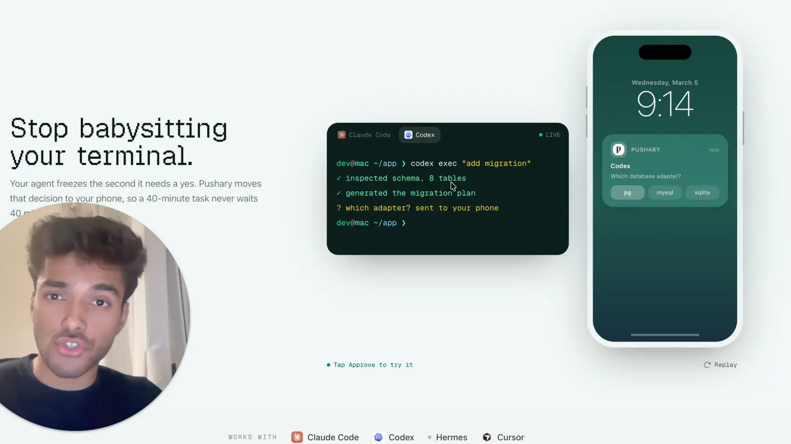

Your agent froze, waiting for your yes.
Pushary sends the question to your phone. Tap Approve and it keeps working.
$9.99/mo after a 3‑day free trial. Cancel anytime.
Walk away. Come back to finished work.
Without Pushary
Hand off a long task. Walk away.
The agent reaches a step it should not take alone. It stops and waits.
You come back. It has not moved in 37 minutes.
With Pushary
Hand off the same task. Walk away for real.
Your phone buzzes: approve the change before it goes live? You tap yes.
You come back. The task finished half an hour ago.
What is Pushary?
Pushary is the control panel for AI agents. When an agent needs a yes, the question goes to your phone, your Mac, Slack or the web app. You approve or deny, and every answer is saved.
One approval, start to finish.
Follow one request below, or watch the 20‑second demo.
Your agent asks.
It pauses at a step that needs your call: run a command, change a file, or pick between options.
Your phone buzzes.
Only when a decision is needed, not for every step. Approve or deny from the notification, or open it to pick an option or type a reply.
It keeps going.
Your answer goes straight back to the agent. When the task finishes, you get a ping for that too.
Set the rules once. Approve only what matters.
YOLO mode approves everything, including the rm and the deploy. Pushary auto‑runs only the safe steps and pings you for the ones you cannot undo.
Auto‑approve the safe stuff
Low‑risk steps you can undo. Allow them once and stop seeing them.
The risky ones come to you
Deleting, deploying, spending money, anything you cannot undo. These go to your phone.
You set the wait time
Set how long each step waits. If you do not answer, your rule decides: deny, or hand it back to the terminal.
Your agent control panel
Every agent in one place. See which one is waiting on you, plus the full audit trail.
3 agents active 212 asked today 174 auto‑cleared 38 you answered
Waiting for you 1
Publish the SDK release
Codex, now
npm publish --access publicauto‑deny 30s
ApproveDeny
Working 2
Refactor the auth module
Claude Code, 4m
src/auth/session.tsNightly data sync
Hermes, 12m
bun run test
Decision ledger
rm -rf ./dist | Denied | Phone | 2m |
vercel deploy --prod | Approved | Phone | 6m |
bun run db:migrate | Approved | Slack | 14m |
cat src/auth/session.ts | Auto | Policy | 15m |
DELETE /v1/customers/:id | Denied | Mac | 22m |
View the full ledger
One command sets up every agent.
It finds the agents on your computer and connects them all to your phone, in under two minutes.
$ npx pushary@latest setup
Works on Mac, Windows and Linux. On a Mac, the Pushary app can set it up for you, no terminal needed.
Works with your agent
Windsurf or another MCP client? Connect it by hand.
- Start your trial.
- Run the command on your computer.
- Scan the QR code with your phone. Done.
Already have an account? Get the phone and Mac apps
Questions, answered
Pricing
- Agent Pro
- $19.99 a month
- Unlimited notifications, budgets, priority support.
- Team
- $59.99 a month
- Up to 10 members and a shared audit trail with export.
Can I approve an AI agent from my phone?
Yes. Questions arrive on your lock screen, on iOS or Android, in the app or the browser.
How much does it cost?
The Agent plan comes with 5,000 notifications a month, about 160 a day. It covers every agent you run.
Is my code sent to Pushary's servers?
Not on routine product paths. The decision path sends notification metadata (title, body text, tool name). Pushary‑launched transcripts are redacted and encrypted on your machine. Your phone can decrypt them, and authorized Pushary compliance admins can recover them for documented legal obligations.
What are permission hooks?
Permission hooks intercept Claude Code's tool approval prompts and route them through push notifications. When the agent wants to run a command or edit a file, you get a push to approve or deny.
What is human‑in‑the‑loop for AI agents?
An AI agent pauses at important or risky steps and waits for a person to decide before it continues.
What question types does Pushary support?
Three: confirm (yes or no), select (2 to 6 options), and input (free text). Your agent picks the right type for the situation.

Watch the 2‑minute versionWhy I built this
I kept coming back to an agent that had been waiting the whole time.
I would kick off a task, switch to something else, and come back to find the agent had paused for a yes 40 minutes earlier. So I built Pushary to move that decision to my phone. The agent asks, I tap, and the work keeps going while I am away.
What people running agents tell us
“I instantly related with the pain of coming back to my Claude Code and seeing ‘waiting for your permission’ instead of ‘your task is completed.’”
“Your tool really helped me improve my Cursor workflow and notifies me when the agent needs me or when it has finished a task. I don’t know why this problem wasn’t solved by someone already.”
“I love your vision of speeding AI agents up by unblocking the stuck permission screen and eventually learning from your permission behaviour based on the context. This is gonna go big very soon.”
Building an AI agent for your own customers? Let them approve what it does, from their phone. See Pushary for agent builders